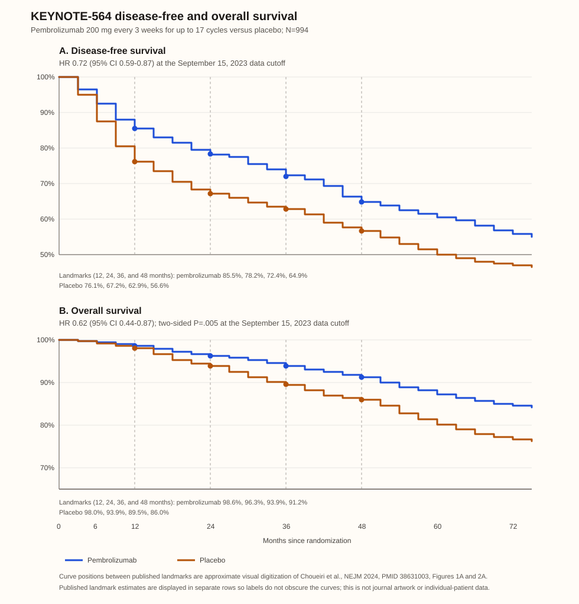

Home / GU oncology / RCC / Adjuvant clear-cell RCC
RCC → Adjuvant clear-cell RCC
current — pembrolizumab has randomized DFS and OS benefit; in the US, pembrolizumab plus belzutifan is FDA-labeled with immature OS
Evidence page
Who this applies to
KEYNOTE-564 eligibility and decision boundary
| Risk group | Exact trial definition | Adjuvant discussion |
|---|---|---|
| Intermediate-high risk | Clear-cell RCC: pT2 grade 4 or sarcomatoid, N0 M0; or pT3 any grade, N0 M0 | Discuss pembrolizumab and risk-adapted surveillance. |
| High risk | Clear-cell RCC: pT4 any grade, N0 M0; or any pT, any grade, N+ M0 | Discuss pembrolizumab and risk-adapted surveillance. |
| M1 NED | Primary tumor plus solid, isolated, soft-tissue, nonbone/nonbrain metastasis completely resected with negative margins synchronously or within 1 year after nephrectomy; NED at baseline | Discuss in a multidisciplinary setting; the subgroup is small and should not be treated as equivalent to M0 cohorts. |
| Lower-risk clear-cell RCC | Does not meet a trial risk definition | Use risk-adapted surveillance; do not extend the trial result to lower-risk disease. |
| Non-clear-cell RCC | Outside the KEYNOTE-564 population | Do not extrapolate the pembrolizumab result; discuss surveillance or a clinical trial. |
- KEYNOTE-564 required nephrectomy and, when relevant, metastasectomy within 12 weeks before randomization. This is trial eligibility, not a universal treatment-start mandate.
- Confirm histology, pT/pN stage, grade, sarcomatoid features, margin status, surgery date, NED status, recovery, renal function, autoimmune history, and baseline endocrinopathy before deciding.
Standard options
| Circumstance | Option | Shared-decision discussion | Typical course |
|---|---|---|---|
| KEYNOTE-564–eligible clear-cell RCC | Pembrolizumab | Randomized benefit was versus placebo, not surveillance. Discuss the DFS/OS results, immune-related toxicity, and possibility of overtreatment. | Trial regimen: 200 mg IV every 3 weeks for up to 17 cycles. The current US label also permits 400 mg IV every 6 weeks. |
| US adult with intermediate-high/high-risk clear-cell RCC or qualifying M1 NED | Pembrolizumab plus belzutifan | FDA-labeled in the US. LITESPARK-022 showed a DFS benefit over pembrolizumab plus placebo, but OS was immature and grade ≥3 treatment-emergent AEs were more frequent. Do not present it as OS-proven or interchangeable with pembrolizumab alone. | Pembrolizumab 200 mg IV every 3 weeks or 400 mg IV every 6 weeks plus belzutifan 120 mg orally daily; up to 1 year per label. |
| Eligible patient preferring no adjuvant systemic therapy, or with competing risk/frailty/major immune-risk concern | Risk-adapted surveillance | Active management option; use postoperative imaging and functional follow-up individualized to recurrence risk, renal function, and preferences. | Ongoing |
| Non-clear-cell RCC or a patient outside the pivotal population | Clinical trial or risk-adapted surveillance | There is no KEYNOTE-564 direct-evidence basis to select pembrolizumab. | Protocol or ongoing |
EAU timing after restaging—not trial eligibility
The EAU RCC guideline strongly recommends offering adjuvant pembrolizumab after restaging, preferably 12–16 weeks after nephrectomy, to patients with KEYNOTE-564-defined risk. It also directs shared discussion of the discordant adjuvant-ICI trials, overtreatment, and immune-related adverse effects.
Landmark evidence
KEYNOTE-564: practice-changing DFS and OS

Approximate source-recreated full Kaplan–Meier traces digitized from the published KEYNOTE-564 DFS and OS figures at the September 15, 2023 data cutoff; no journal artwork or individual-patient data are reproduced. Exact published 12-, 24-, 36-, and 48-month estimates are labeled. Intermediate curve positions are approximate visual digitization and must not be read as reported landmark estimates.
Cross-trial comparison
Trial results are not head-to-head efficacy comparisons: eligibility, recurrence risk, M1 NED inclusion, treatment exposure, endpoint assessor, and comparator differ. Hazard ratios and published landmark rates are reported where available.
| Trial | Population | Intervention | Comparator | Primary endpoint | Clinically meaningful outcomes | Generalizability-critical differences |
|---|---|---|---|---|---|---|
| KEYNOTE-564, NCT03142334 | 994 ccRCC with intermediate-high/high risk or qualifying M1 NED after nephrectomy ± metastasectomy | Pembrolizumab 200 mg IV every 3 weeks for ≤17 cycles | Matching placebo | Investigator-assessed DFS | 5-year DFS 60.9% vs 52.2% (HR 0.71). 5-year OS 87.7% vs 82.3% (HR 0.66). | ccRCC only; includes qualifying M1 NED but not lower-risk disease. Direct evidence base for adjuvant pembrolizumab. |
| LITESPARK-022, NCT05239728 | 1,841 ccRCC at increased recurrence risk after nephrectomy | Pembrolizumab 400 mg IV every 6 weeks for ≤9 doses + belzutifan 120 mg orally daily | Pembrolizumab 400 mg IV every 6 weeks + placebo | Investigator-assessed DFS | 24-month DFS 80.7% vs 73.7% (HR 0.72). OS HR 0.78 (P=.24) at 29% of planned events; immature. | Add-on trial against pembrolizumab, not pembrolizumab vs surveillance; does not test pembrolizumab monotherapy’s effect versus placebo. |
| S-TRAC, NCT00375674 | 615 locoregional, high-risk ccRCC after nephrectomy | Sunitinib 50 mg orally daily, 4 weeks on/2 weeks off, for 1 year | Placebo | Blinded independent central review DFS | Median DFS 6.8 vs 5.6 years (HR 0.76; P=.03); OS immature. | Clear-cell, high-risk population; different recurrence-risk definition and VEGFR-TKI mechanism from the ICI trials. |
| ASSURE, NCT00326898 | 1,943 completely resected nonmetastatic RCC, including clear-cell and non-clear-cell; high-grade pT1b or greater | Sunitinib or sorafenib for 54 weeks | Placebo | DFS for each active arm vs placebo | 5-year DFS: sunitinib 54.3%, sorafenib 54.0%, placebo 56.4%; HR 1.02 and 0.97, respectively. | Only trial here including non-clear-cell RCC and a lower-risk high-grade pT1b threshold; broader population than KEYNOTE-564. |
| PROTECT, NCT01235962 | 1,538 resected pT2 high-grade or ≥pT3/N1 ccRCC | Pazopanib daily for 1 year; starting dose reduced from 800 to 600 mg | Placebo | DFS in the protocol-amended 600-mg intention-to-treat population | Primary DFS HR 0.86 (95% CI 0.70–1.06; P=.165); final OS HR 1.00. | ccRCC only and M0; primary dose/population changed after safety attrition, so the secondary 800-mg DFS signal is not comparable with the primary result. |
| ATLAS, NCT01599754 | 724 RCC with >50% clear-cell component, ≥pT2 and/or N+, no macroscopic residual/metastatic disease | Axitinib 5 mg orally twice daily for ≤3 years | Placebo | Independent review committee DFS | Stopped for futility; DFS HR 0.87 (95% CI 0.66–1.15; P=.32). Highest-risk subgroup IRC analysis HR 0.74 (P=.0704). | Entry included ≥pT2 disease, potentially lower risk than S-TRAC; highest-risk finding is subgroup evidence, not a positive primary endpoint. |
| IMmotion010, NCT03024996 | 778 RCC with clear-cell or sarcomatoid component and increased recurrence risk, including an M1 NED stratum | Atezolizumab 1,200 mg IV every 3 weeks for 16 cycles | Placebo | Investigator-assessed DFS | Median DFS 57.2 vs 49.5 months (HR 0.93; P=.50). | Histology criterion and risk definitions differ from KEYNOTE-564; negative PD-L1 inhibitor trial does not establish a class effect. |
| CheckMate 914 Part A, NCT03138512 | 816 localized, predominantly ccRCC, M0, after partial/radical nephrectomy 4–12 weeks earlier | Nivolumab 240 mg IV every 2 weeks ×12 + ipilimumab 1 mg/kg IV every 6 weeks ×4 | Matching placebo | Blinded independent central review DFS | 24-month DFS 76% vs 74% (HR 0.92; P=.53). Grade 3–5 AEs 38% vs 10%. | M0 only; excluded active autoimmune disease or substantial immunosuppression, used a shorter course, and did not include M1 NED. |
| CheckMate 914 Part B, NCT03138512 | Separate 825-participant cohort with the same localized, predominantly ccRCC M0 eligibility | Nivolumab 240 mg IV every 2 weeks for ≤12 doses | Placebo | Blinded independent central review DFS | 18-month DFS 78.4% vs 75.4% (HR 0.87; P=.40). OS immature. | Same M0-only and immunosuppression/autoimmunity boundaries as Part A; different regimen duration and no M1 NED. |
| PROSPER ECOG-ACRIN EA8143, NCT03055013 | 819 previously untreated clinical T2+ or any-N+ RCC, clear-cell or non-clear-cell; selected oligometastatic NED eligible | One preoperative nivolumab 480 mg dose → surgery → nine adjuvant doses | Surgery followed by observation | Investigator-reviewed RFS | Stopped for futility; RFS HR 0.94 (95% CI 0.74–1.21; one-sided P=.32). | Perioperative, open-label strategy with an observation comparator; includes non-clear-cell and selected oligometastatic disease, so it is not an adjuvant-only placebo comparison. |
Biomarkers
| Marker or feature | Role now | Practical boundary |
|---|---|---|
| Clear-cell component and KEYNOTE-564 risk features | Direct-evidence selection | Confirm on nephrectomy pathology; do not substitute a prognostic score for the pivotal eligibility definition. |
| PD-L1 | Not a routine adjuvant selector | No validated threshold selects who benefits from adjuvant pembrolizumab. |
| ctDNA / molecular residual disease | Investigational | Do not withhold adjuvant therapy because MRD is negative outside a trial. MRD GATE RCC is testing an MRD-guided strategy in KEYNOTE-564–eligible clear-cell RCC. |
| Tumor genomic or expression signature | Investigational | No validated molecular assay selects adjuvant pembrolizumab in this setting. |
| Germline evaluation | Hereditary-risk assessment, not adjuvant selection | Consider when age, bilateral/multifocal disease, family history, or syndrome features raise concern. |
Upcoming trial results
| Trial or publication | Why it may change care | Evidence status |
|---|---|---|
| LITESPARK-022 mature follow-up | Clarifies whether the established DFS advantage of pembrolizumab plus belzutifan over pembrolizumab alone becomes an OS advantage and how durable the added toxicity is. | Peer-reviewed phase 3 publication; OS immature at the reported analysis. Study follow-up remains active. |
| RAMPART, NCT03288532 | Tests adjuvant durvalumab alone or with tremelimumab against active monitoring in resected RCC, including non-clear-cell disease; longer follow-up may contextualize the discordant ICI-trial results. | Phase 3 platform. Enrollment closed in June 2023; congress reporting and OS follow-up are pending peer-reviewed maturity. |
| MRD GATE RCC, NCT06005818 | Tests whether an MRD-guided strategy can safely observe MRD-negative, otherwise KEYNOTE-564–eligible clear-cell RCC while treating MRD-positive participants with pembrolizumab. | Recruiting, nonrandomized phase 2; no efficacy results. |
| STRIKE, NCT06661720 | Phase 3 test of adding tivozanib to adjuvant pembrolizumab for high-risk RCC. | Registry-posted trial; no efficacy results. |
Toxicity
The table preserves regimen-level safety outcomes and limits named-toxicity rows to events reported in more than 5% of patients at any grade; named events with a grade 3 or higher signal are preferred. LITESPARK-022 evaluates belzutifan added to pembrolizumab, not either regimen against surveillance.
| Regimen and comparator | Trial-level safety outcomes | Selected named toxicities | Counseling focus |
|---|---|---|---|
| Pembrolizumab versus placebo, KEYNOTE-564 | At 30.1 months, grade ≥3 AEs of any cause: 32% versus 18%; immune-mediated AEs: 36% versus 7%; discontinuation due to AEs: 21% versus 2%. | Hypothyroidism: 21% versus 4%; hyperthyroidism: 13% versus 0%. Grade-specific rates for these thyroid events were not reported in the available trial text. | Check thyroid function and review new fatigue, weight or temperature intolerance, and palpitations. Immune toxicity can require a treatment hold, systemic corticosteroids, or hormone replacement; endocrine effects can persist. |
| Pembrolizumab plus belzutifan versus pembrolizumab plus placebo, LITESPARK-022 | Grade ≥3 treatment-emergent AEs: 52.1% versus 30.2%; discontinuation of all study treatment: 11.9% versus 9.0%; immune-mediated AEs or infusion reactions: 35.4% versus 38.7%. | US label: decreased hemoglobin, 95% with grade 3–4 11% (versus 26% and 0.7%); increased ALT, 57% with grade 3–4 13% (versus 33% and 3.2%); hypoxia, 7% with grade ≥3 5%. | Monitor CBC, ALT, and oxygen saturation. Promptly report new fatigue, lightheadedness, or dyspnea; marked breathing difficulty needs urgent assessment. |
On-treatment monitoring
| SOC/option regimen | Hallmark monitoring toxicity and published rate | Patient action / clinic response |
|---|---|---|
| Pembrolizumab | KEYNOTE-564: immune-mediated AEs 36% vs 7%; hypothyroidism 21% vs 4% and hyperthyroidism 13% vs 0%. | Check thyroid function and review fatigue, weight or temperature intolerance, palpitations, and other bowel, lung, liver, skin, or endocrine symptoms; persistent diarrhea, dyspnea, jaundice, or marked fatigue requires prompt contact. |
| Pembrolizumab plus belzutifan | LITESPARK-022 label: decreased hemoglobin 95%, grade 3–4 11%; increased ALT 57%, grade 3–4 13%; hypoxia 7%, grade ≥3 5%. | Monitor CBC, ALT, and oxygen saturation; new fatigue, lightheadedness, or dyspnea needs prompt contact and marked breathing difficulty needs urgent assessment. |
Patient counseling and action plan
- For pembrolizumab, ask patients to contact the oncology team for new thyroid symptoms, including unexplained fatigue, weight or temperature intolerance, or palpitations. Immune toxicity can begin during or after treatment and may require a hold, corticosteroids, or hormone replacement; endocrine effects can be lasting.
- For pembrolizumab plus belzutifan, monitor CBC, ALT, and oxygen saturation. Ask patients to contact the oncology team for new fatigue, lightheadedness, or shortness of breath; marked breathing difficulty needs urgent assessment.
- For belzutifan, review the label-specific embryo-fetal warning and pregnancy-prevention counseling. This clinically critical warning is retained despite not being a numeric trial-toxicity row.
Epic phrase
#adjuvantccrcc
Phrase helpers
Choose the documented category before copying the phrase.
KEYNOTE-564 eligibility
Uses the published trial definition; it does not determine treatment suitability or timing.
Complete calculator fields
- Counseling: Reviewed pathology-based recurrence risk after nephrectomy with the KEYNOTE-564 eligibility calculator: Not selected. This calculator classifies the published trial-risk category; it does not replace pathology review or patient-specific treatment assessment.
- Counseling: Reviewed adjuvant pembrolizumab and risk-adapted surveillance. In KEYNOTE-564, pembrolizumab was compared with placebo after surgery, not with surveillance. At 5 years, estimated disease-free survival was 60.9% with pembrolizumab versus 52.2% with placebo, and overall survival was 87.7% versus 82.3%. These results apply to the trial population and do not establish benefit in lower-risk or non-clear-cell RCC.
- Counseling: For M1 NED, reviewed that the trial required complete resection of the primary tumor and a solid, isolated soft-tissue metastasis at nephrectomy or within 1 year. The subgroup was small; multidisciplinary review is needed rather than a standalone efficacy estimate.
- Counseling: Reviewed pembrolizumab toxicity in KEYNOTE-564: grade ≥3 AEs of any cause were 32% and 21% discontinued because of an AE; immune-mediated AEs occurred in 36%. The named immune toxicities retained for counseling are hypothyroidism (21%) and hyperthyroidism (13%). Some immune effects can occur after treatment and can persist; treatment may require holding therapy, corticosteroids, hormone replacement, or specialist care.
- Counseling: Reviewed when to contact oncology promptly: new unexplained fatigue, weight or temperature intolerance, palpitations, lightheadedness, or shortness of breath. Marked breathing difficulty needs urgent assessment. *** after-hours/urgent-assessment instructions reviewed.
- Monitoring: With pembrolizumab, obtain thyroid testing and review bowel, lung, liver, skin, and endocrine symptoms. With pembrolizumab plus belzutifan, obtain CBC, ALT, and oxygen saturation; new fatigue, lightheadedness, or dyspnea requires prompt contact. ***
- Counseling: If considering pembrolizumab plus belzutifan, reviewed that it is FDA-labeled in the US for eligible clear-cell RCC. LITESPARK-022 showed a DFS benefit versus pembrolizumab plus placebo; overall-survival data were immature. Grade ≥3 treatment-emergent AEs were 52.1% versus 30.2%. Label-verified safety signals are decreased hemoglobin (95%; grade 3–4 11%), increased ALT (57%; grade 3–4 13%), and hypoxia (7%; grade ≥3 5%). It is not presented as proven to improve overall survival.
- Decision: *** elects pembrolizumab / pembrolizumab plus belzutifan / risk-adapted surveillance / clinical-trial evaluation after shared decision-making.
- Labs/NGS: Documented KEYNOTE-564 risk assessment: Not selected; confirmed histology * and risk features *. Obtain thyroid testing for pembrolizumab and CBC, ALT, and oxygen saturation for pembrolizumab plus belzutifan per label and institutional protocol. Severe anemia or hypoxia may require a dose hold, reduction, or discontinuation. Review belzutifan pregnancy-prevention counseling per label. Tumor NGS and ctDNA are not required to select adjuvant therapy.
- Procedures: *** postoperative restaging and multidisciplinary review completed / planned. For non-clear-cell histology or disease outside KEYNOTE-564 criteria, favor surveillance or clinical-trial review rather than extrapolating pembrolizumab benefit.
- Medications: If selected, pembrolizumab monotherapy is 200 mg IV every 3 weeks for up to 17 cycles. Pembrolizumab plus belzutifan is pembrolizumab 200 mg IV every 3 weeks or 400 mg IV every 6 weeks plus belzutifan 120 mg orally daily, for up to 1 year; confirm current FDA label and local formulary.
- Referrals: *** medical oncology / endocrinology / nephrology / clinical-trial consultation, as indicated.
- Follow-up: *** risk-adapted chest and abdominal surveillance; review new immune-related symptoms and renal function at each visit.
Guideline references
| Source | Setting-level reference |
|---|---|
| EAU Renal Cell Carcinoma guideline | Strong recommendation to offer adjuvant pembrolizumab after restaging, preferably 12–16 weeks post-nephrectomy, for KEYNOTE-564-defined clear-cell risk; shared decision-making should address overtreatment, immune toxicity, and discordant ICI trials. |
| NCCN Kidney Cancer guideline | Current US professional guideline reference for adjuvant systemic-therapy pathways. |
| ESMO RCC Clinical Practice Guideline | Current European guideline reference for diagnosis, treatment, and follow-up. |
| AUA localized renal mass guideline | US urology reference for localized-RCC management and follow-up. |
| FDA Keytruda label, revised July 2026 | US labeled adjuvant pembrolizumab monotherapy and pembrolizumab–belzutifan indications and dosing. |
Sources
- Choueiri et al. (2021). Adjuvant pembrolizumab after nephrectomy in renal-cell carcinoma. *New England Journal of Medicine*. DOI: 10.1056/NEJMoa2106391 | PMID: 34407342
- Powles et al. (2022). KEYNOTE-564 30-month follow-up. *Lancet Oncology*. DOI: 10.1016/S1470-2045(22)00487-9 | PMID: 36055304
- Choueiri et al. (2024). Overall survival with adjuvant pembrolizumab in renal-cell carcinoma. *New England Journal of Medicine*. DOI: 10.1056/NEJMoa2312695 | PMID: 38631003
- Haas et al. (2026). Five-year KEYNOTE-564 results. *Annals of Oncology*. DOI: 10.1016/j.annonc.2026.08.006 | PMID: 42648402
- Choueiri et al. (2026). Adjuvant pembrolizumab plus belzutifan for renal-cell carcinoma. *New England Journal of Medicine*. DOI: 10.1056/NEJMoa2518245 | PMID: 42384869
- Ravaud et al. (2016). Adjuvant sunitinib in high-risk renal-cell carcinoma after nephrectomy. *New England Journal of Medicine*. DOI: 10.1056/NEJMoa1611406 | PMID: 27718781
- Haas et al. (2016). Adjuvant sunitinib or sorafenib for high-risk, non-metastatic renal-cell carcinoma (ASSURE). *Lancet*. DOI: 10.1016/S0140-6736(16)00559-6 | PMID: 26969090
- Motzer et al. (2017). Adjuvant pazopanib versus placebo after nephrectomy (PROTECT). *Journal of Clinical Oncology*. DOI: 10.1200/JCO.2017.73.5324 | PMID: 28902533
- Gross-Goupil et al. (2018). Axitinib versus placebo as adjuvant treatment (ATLAS). *Annals of Oncology*. DOI: 10.1093/annonc/mdy454 | PMID: 30346481
- Pal et al. (2022). IMmotion010. *Lancet*. DOI: 10.1016/S0140-6736(22)01658-0 | PMID: 36099926; Motzer et al. (2023). CheckMate 914 Part A. *Lancet*. DOI: 10.1016/S0140-6736(22)02574-0 | PMID: 36774933; Allaf et al. (2024). PROSPER. *Lancet Oncology*. DOI: 10.1016/S1470-2045(24)00211-0 | PMID: 38942046
- Motzer et al. (2025). CheckMate 914 Part B. *Journal of Clinical Oncology*. DOI: 10.1200/JCO.24.00773 | PMID: 39303200
- EAU Renal Cell Carcinoma guideline; NCCN Kidney Cancer guideline; ESMO RCC guideline; AUA renal mass guideline; FDA Keytruda label.
- FDA WELIREG label.
Changelog
- 2026-09-21: Added a dedicated all-regimen on-treatment monitoring table for pembrolizumab and pembrolizumab–belzutifan.
- 2026-09-21: Tightened named-toxicity reporting and paired counseling to a >5% any-grade filter, prioritizing events with a grade ≥3 signal; retained trial-level grade ≥3, immune-mediated, and discontinuation outcomes. Added label-verified decreased hemoglobin, ALT, and hypoxia rates for pembrolizumab–belzutifan.
- 2026-09-21: Removed calculated risk-reduction and treatment-number metrics from the cross-trial comparison, removed nonstructural emphasis, and condensed Toxicity to a single trial-first table with short counseling; dropped nonessential real-world cohorts and detailed named-toxicity tables.
- 2026-09-21: Replaced the mixed landmark table with an OpenEvidence-style cross-trial comparison that makes population, regimen, comparator, endpoint, outcome, and generalizability differences explicit.
- 2026-09-21: Rebuilt around explicit KEYNOTE-564 eligibility, trial-versus-guideline timing, linked primary sources, current FDA-labeled pembrolizumab–belzutifan positioning, named upcoming trial results, and a complete paired counseling phrase.
- 2026-09-21: Renamed the prospective-evidence section to Upcoming trial results.
- 2026-09-21: Replaced landmark-only survival display with full source-recreated DFS/OS KM traces, explicitly labeling visual digitization as approximate and keeping later five-year estimates separate.
- 2026-09-21: Moved and expanded Toxicity to the page bottom; separated trial endpoint/timepoint labels, added regimen-specific anemia/hypoxia and immune-toxicity counseling, and added same-setting real-world pembrolizumab context. Repositioned KM landmark values into dedicated rows to prevent label overlap.